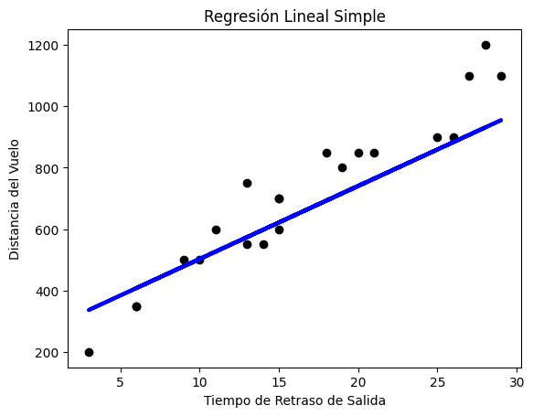

REGRESION LINEAL CON 100 DATOS
import pandas as pd
from sklearn.linear_model import LinearRegression
from sklearn.model_selection import train_test_split
from sklearn import metrics
import matplotlib.pyplot as plt
# Cargar datos desde el archivo CSV
df = pd.read_csv('VuelosRL.csv')
# Especificar las columnas para X e y
X = df[['TiempodeRetrasodeSalida(min)']]
y = df['DistanciadelVuelo(km)']
# Dividir los datos en conjunto de entrenamiento y prueba
X_train, X_test, y_train, y_test = train_test_split(X, y, test_size=0.2, random_state=42)
# Crear y entrenar el modelo de regresión lineal
model = LinearRegression()
model.fit(X_train, y_train)
# Realizar predicciones en el conjunto de prueba
y_pred = model.predict(X_test)
# Calcular métricas de evaluación
r_squared = metrics.r2_score(y_test, y_pred)
print(f'R^2: {r_squared}')
# Otras métricas
if r_squared >= 0:
print(f'R: {r_squared**0.5}') # Raíz cuadrada de R^2
else:
print("R: No se puede calcular la raíz cuadrada de un valor negativo")
print(f'Score: {model.score(X_test, y_test)}')
# Ejemplos de predicciones
sample_predictions = model.predict([[1], [2], [3]]) # Ejemplos de valores para predecir
print(f'Ejemplos de predicciones: {sample_predictions}')
# Visualizar los resultados
plt.scatter(X_test, y_test, color='black')
plt.plot(X_test, y_pred, color='blue', linewidth=3)
plt.title('Regresión Lineal Simple')
plt.xlabel('Tiempo de Retraso de Salida')
plt.ylabel('Distancia del Vuelo')
plt.show()
# Mostrar los coeficientes A y B
print(f'Coeficiente A: {model.coef_[0]}')
print(f'Intercepto B: {model.intercept_}')R^2: 0.8083684952758542
R: 0.899093151612142
Score: 0.8083684952758542
Ejemplos de predicciones: [288.75502786 312.51928275 336.28353764]
/usr/local/lib/python3.10/dist-packages/sklearn/base.py:439: UserWarning: X does not have valid feature names, but LinearRegression was fitted with feature names
warnings.warn

Coeficiente A: 23.764254891599276
Intercepto B: 264.9907729639169